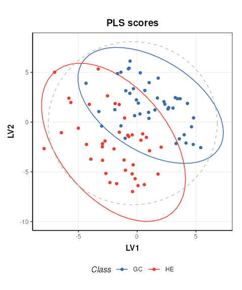
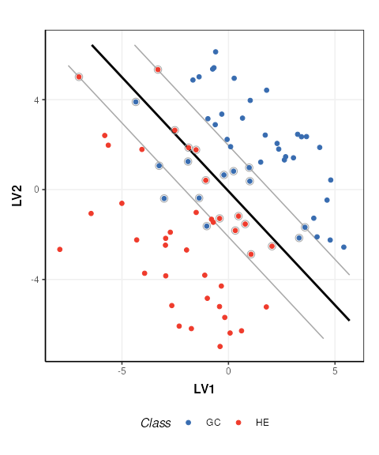
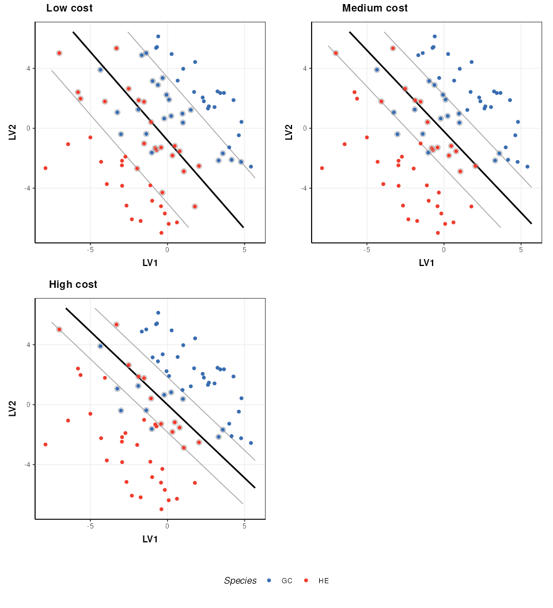
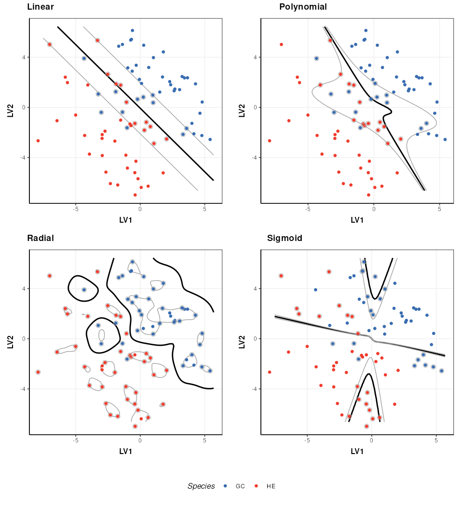
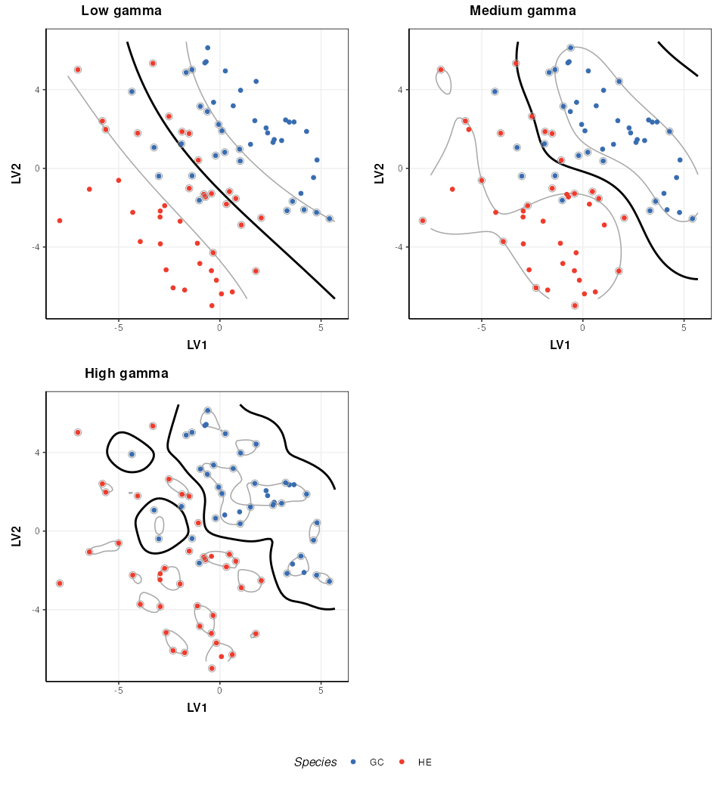

Classification of Metabolomics Data using Support Vector Machines.
Gavin R Lloyd
Phenome Centre Birmingham, University of Birmingham, UKg.r.lloyd@bham.ac.uk
Andris Jankevics
Phenome Centre Birmingham, University of Birmingham, UKa.jankevics@bham.ac.uk
Ralf J Weber
Phenome Centre Birmingham, University of Birmingham, UKr.j.weber@bham.ac.uk
2026-04-16
Source:vignettes/articles/metabolomics_and_svm.Rmd
metabolomics_and_svm.RmdIntroduction
The aim of this vignette is to illustrate how to apply SVM analysis for Classifying Metabolomics data.
Support vector Machines (SVM) are a commonly used method in Machine Learning. For classification tasks they are used to generate a boundary between groups of samples in the training set. As well as generating linear boundaries, SVM can be extended to exploit the use of kernels and generate complex non-linear boundaries between groups if required.
For the structToolbox package, SVM functionality
provided by the e1071 package
has been incorporated into a model object. A chart object
(svm_plot_2d) is also available to plot SVM boundaries for
data with two variables.
Dataset
The 1H-NMR dataset used and described in Mendez et al., (2020) and in this vignette contains processed spectra of urine samples obtained from gastric cancer and healthy patients Chan et al., (2016). The raw experimental data is available through Metabolomics Workbench (PR000699) and the processed version is available from here as an Excel data file.
For simplicity we will use a pre-processed version of the 1H-NMR
“Gastric cancer” dataset using the structToolbox package.
Details in regards to pre-processing are reported in the “NMR-based
clinical metabolomics” vignette of the `r Biocpkg(“structToolbox”)
package.
# summary of DatasetExperiment object
DE## A "DatasetExperiment" object
## ----------------------------
## name:
## description:
## data: 140 rows x 53 columns
## sample_meta: 140 rows x 5 columns
## variable_meta: 53 rows x 1 columnsFor the purposes of illustrating the effect of SVM parameters on the boundary between groups, we reduce the data to include only the GC and HE groups and apply PLS to reduce the data to two components. We then treat the PLS scores as as a two group dataset with only two features.
# model sequence and pls model (NB data already centred)
MS = filter_smeta(mode = 'include', levels = c('GC','HE'), factor_name = 'Class') +
PLSDA(factor_name = 'Class',number_components = 2)
# apply PLS model
MS = model_apply(MS,DE)
# plot the data
C = pls_scores_plot(factor_name = 'Class')
chart_plot(C,MS[2])
# new DatasetExperiment object from the PLS scores
DE2 = DatasetExperiment(
data = MS[2]$scores$data,
sample_meta = predicted(MS[1])$sample_meta,
variable_meta = data.frame('LV'=c(1,2),row.names = colnames(MS[2]$scores)),
name = 'Illustrativate SVM dataset',
description = 'Generated by applying PLS to the processed Gastric cancer (NMR) dataset'
)
DE2## A "DatasetExperiment" object
## ----------------------------
## name: Illustrativate SVM dataset
## description: Generated by applying PLS to the processed Gastric cancer (NMR) dataset
## data: 83 rows x 2 columns
## sample_meta: 83 rows x 5 columns
## variable_meta: 2 rows x 1 columnsBasic SVM model
The simplest SVM model uses a linear kernel. In
structToolbox the SVM model can be used to
train and apply SVM models. A svm_plot_2d chart object is
provided for visualisation of boundaries in two dimensions.
# SVM model
M = SVM(
factor_name = 'Class',
kernel = 'linear'
)
# apply model
M = model_apply(M,DE2)
# plot boundary
C = svm_plot_2d(factor_name = 'Class')
chart_plot(C,M, DE2)## Warning: `aes_()` was deprecated in ggplot2 3.0.0.
## ℹ Please use tidy evaluation idioms with `aes()`
## ℹ The deprecated feature was likely used in the structToolbox package.
## Please report the issue to the authors.
## This warning is displayed once per session.
## Call `lifecycle::last_lifecycle_warnings()` to see where this warning was
## generated.## Warning: Using `size` aesthetic for lines was deprecated in ggplot2 3.4.0.
## ℹ Please use `linewidth` instead.
## ℹ The deprecated feature was likely used in the structToolbox package.
## Please report the issue to the authors.
## This warning is displayed once per session.
## Call `lifecycle::last_lifecycle_warnings()` to see where this warning was
## generated.
The SVM boundary is plotted in black, the margins in grey and support vectors are indicated by grey circles.
SVM cost function
The SVM cost function applies a penalty to samples on the wrong side of the margins. A high penalty results in a narrow margin and tries to force more samples to be on the correct side of the boundary. A low penalty makes for a wider margin and is less strict about samples being misclassified. The optimal cost to use is data dependent.
# low cost
M$cost=0.01
M=model_apply(M,DE2)
C=svm_plot_2d(factor_name='Species')
g1=chart_plot(C,M,DE2)
# medium cost
M$cost=0.05
M=model_apply(M,DE2)
C=svm_plot_2d(factor_name='Species')
g2=chart_plot(C,M,DE2)
# high cost
M$cost=100
M=model_apply(M,DE2)
C=svm_plot_2d(factor_name='Species')
g3=chart_plot(C,M,DE2)
# plot
prow <- plot_grid(
g1 + theme(legend.position="none"),
g2 + theme(legend.position="none"),
g3 + theme(legend.position="none"),
align = 'vh',
labels = c("Low cost", "Medium cost", "High cost"),
hjust = -1,
nrow = 2
)
legend <- get_legend(
# create some space to the left of the legend
g1 + guides(color = guide_legend(nrow = 1)) +
theme(legend.position = "bottom")
)
plot_grid(prow, legend, ncol=1, rel_heights = c(1, .1))
Kernel functions
A number of different kernels can be used with support vector
machines. For the structToolbox wrapper ‘linear’,
‘polynomial’,‘radial’ and ‘sigmoid’ kernels can be specified. Using
kernels allows the boundary to be more flexible, but often require
additional parameters to be specified. The best kernel to use will vary
depending on the dataset, but a common choice is the radial kernel as it
allows high flexibility with a single parameter.
# set a fixed cost for this comparison
M$cost=1
# linear kernel
M$kernel='linear'
M=model_apply(M,DE2)
C=svm_plot_2d(factor_name='Species')
g1=chart_plot(C,M,DE2)
# polynomial kernel
M$kernel='polynomial'
M$gamma=1
M$coef0=0
M=model_apply(M,DE2)
C=svm_plot_2d(factor_name='Species')
g2=chart_plot(C,M,DE2)
# rbf kernel
M$kernel='radial'
M$gamma=1
M=model_apply(M,DE2)
C=svm_plot_2d(factor_name='Species')
g3=chart_plot(C,M,DE2)
# sigmoid kernel
M$kernel='sigmoid'
M$gamma=1
M$coef0=0
M=model_apply(M,DE2)
C=svm_plot_2d(factor_name='Species')
g4=chart_plot(C,M,DE2)
# plot
prow <- plot_grid(
g1 + theme(legend.position="none"),
g2 + theme(legend.position="none"),
g3 + theme(legend.position="none"),
g4 + theme(legend.position="none"),
align = 'vh',
labels = c("Linear", "Polynomial", "Radial","Sigmoid"),
hjust = -1,
nrow = 2
)
legend <- get_legend(
# create some space to the left of the legend
g1 + guides(color = guide_legend(nrow = 1)) +
theme(legend.position = "bottom")
)
plot_grid(prow, legend, ncol = 1, rel_heights = c(1, .1))
The parameters of a kernel can be used to control the complexity of the boundary. Here I show how the radial kernel parameter “gamma” can be used to change the complexity of the boundary. In combination with the cost parameter (which I keep constant here) this allows for highly flexible boundary models.
# rbf kernel and cost
M$kernel = 'radial'
M$cost = 1
# low gamma
M$gamma=0.01
M=model_apply(M,DE2)
C=svm_plot_2d(factor_name='Species')
g1=chart_plot(C,M,DE2)
# medium gamma
M$gamma=0.1
M=model_apply(M,DE2)
C=svm_plot_2d(factor_name='Species')
g2=chart_plot(C,M,DE2)
# high gamma
M$gamma=1
M=model_apply(M,DE2)
C=svm_plot_2d(factor_name='Species')
g3=chart_plot(C,M,DE2)
# plot
prow <- plot_grid(
g1 + theme(legend.position="none"),
g2 + theme(legend.position="none"),
g3 + theme(legend.position="none"),
align = 'vh',
labels = c("Low gamma", "Medium gamma", "High gamma"),
hjust = -1,
nrow = 2
)
legend <- get_legend(
# create some space to the left of the legend
g1 + guides(color = guide_legend(nrow = 1)) +
theme(legend.position = "bottom")
)
plot_grid(prow, legend, ncol = 1, rel_heights = c(1, .1))
Note that best practice would be to select the optimal kernel parameter(s) in combination with the cost parameter (e.g. by 2d grid search) so that the best combination of both is identified.